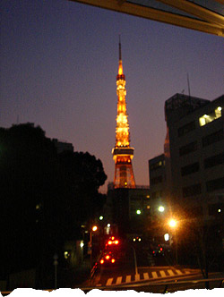

 image: mugi“ポツンと東京を見下ろすその姿は気高く、とても真摯だ。”
決して大袈裟な話ではなく、私には「命の恩人」がいる。
正確にいえば「命」というより「心の恩人」。
もし、その人に出会わず、あそこで「他人を傷つける自分」から逃げ続けていたら、今の私の人生はなかった。
その人の持つ心の深さに応えたいと思いつつ、自分のあさはかさに今日も躓いている。
せめて年の初めには、力になることをと思い、その人の干支[1]である辰を崇める愛宕神社[2]に詣でている。
神社までの道すがら、高層マンションの合間から垣間見える東京タワー。
鉄の塊に心はないというけれど、ポツンと東京を見下ろすその姿は気高く、とても真摯だ。
私がぼーっと見上げていると「誰が見ていなくても、淡々とね。温かく、淡々とやるんですよ」と、その人がカメラのシャッターをきりながら、呟くように言った。
その日から、東京タワー[3]は私の目標になった。
referenced works
- 干支：陰陽道をもとに、本来は十干と十二支を組み合わせて、六十組が存在する。起源は中国の殷とも言われる。十干は、甲乙丙丁戊己康辛壬癸。干支は、子丑寅卯辰巳午未申酉戌亥。この60組の組み合わせが一巡することから、60歳を還暦とし、祝の儀式を行う。かつては、家長や公職の地位を退くタイミングだった。 ↩
- 愛宕神社：慶長8年（1603年）、徳川家康により、江戸の防火を祈願して火産霊命（ほむすびのみこと）が祀られた。また、巳年、辰年の守り本尊として普賢大菩薩も祀られている。防火、防災、商売繁盛、恋愛、結婚、縁結びに御利益があるといわれている。ただし、御利益とは、そもそも神仏を信ずる者のみが受けることのできる恩恵だということを忘れてはならない。 ↩
- 東京タワー：東京都港区芝公園内に屹立する、333メートルの総合電波塔。昭和33年（1958年）完成。大展望台が地上150メートル地点に、特別展望台は地上250メートル地点にある。最近は、イベントやプロモーションで、ライトアップの色が変化する。ライトアップは、午前0時まで。消灯の瞬間を一緒に見たカップルは、幸せになれる。そんな都市伝説があるというが、消灯のタイミングは諸般の事情によってずれることもあり、幸せを手に入れるのも運次第である。 ↩
location information
- 場所: 港区神谷町駅から、愛宕神社までの道すがら
- 時間: 夕方
- 緯度: 35.672916
- 経度: 139.752617
- 地図: Google Maps
016 “ポツンと東京を見下ろすその姿は気高く、とても真摯だ。”
015 “光に彩られて先輩の横顔が、綺麗に染まる.。”
014 “悲しくて歩けないという気持ちを初めて知った夜”
013 “私たちの声だけが静かに揺れた”
012 “細くぐるりと指を囲む、日焼けをしていない左手の薬指の根元”
011 “涙を流しながら煙を吐く彼の隣”
010 “幼い耳には雑音にしか聴こえない音楽に興味が湧いた”
009 “今年も蕎麦が食べられるなぁ”
008 “お堀に映った月をみんなで見てる”
007 “バッグの中だけがつめたいまま”
006 “ほぼ満員の客がざわざわと寿司を食らっている”
005 “向かい合って、仁王立ち”
004 “なんでもないたった6畳の白い部屋”
003 “昔の彼女がスーツを着てモデルをしてた”
002 “電車が悪いんです”
001 “どこで彼女とセックスをするのかは、東京の子供にとっては問題です”

Write for Us!
広い東京の中に、あなたの思い出を刻んでみませんか？ あの日、あの場所で体験した、あの出来事。あなたにとって忘れられない思い出を、短い物語にして送ってください。
commentary